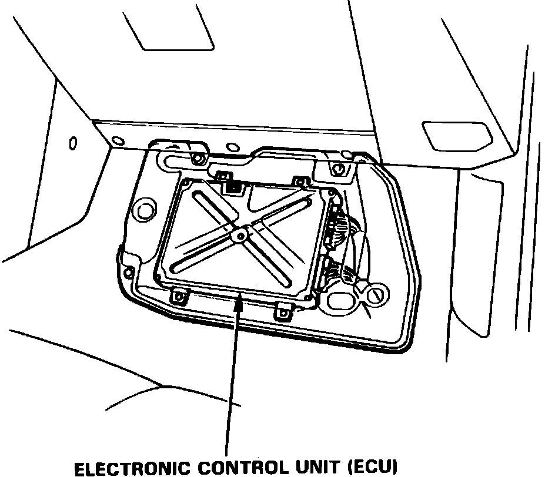
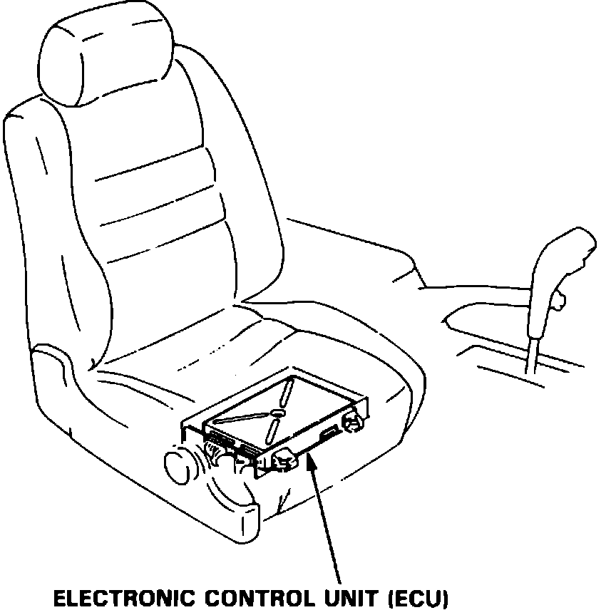

Engine Control Module: Locations
Fig. 2 Electronic Control Unit (Coupe):

The Electronic Control Unit is located below a panel under the R.F. carpet.
COUPE
Fig. 2 Electronic Control Unit (Sedan):

The Electronic Control Unit is located under the R.F. seat.
SEDAN